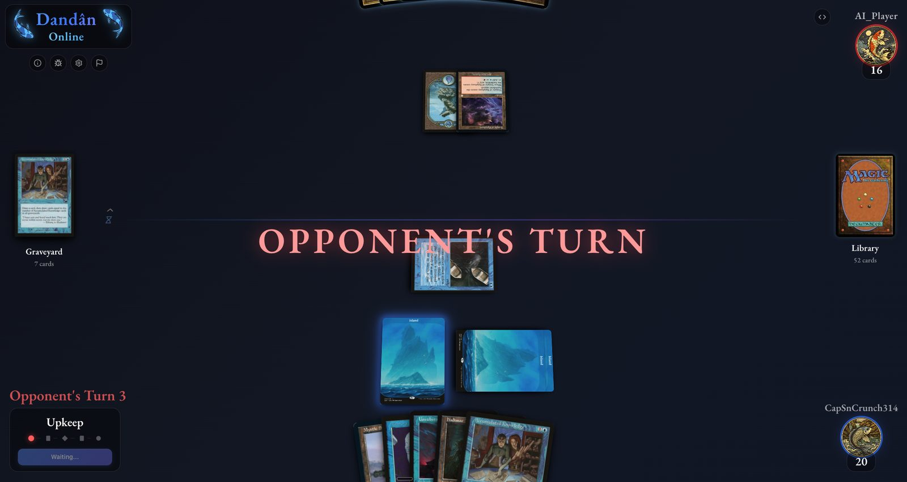
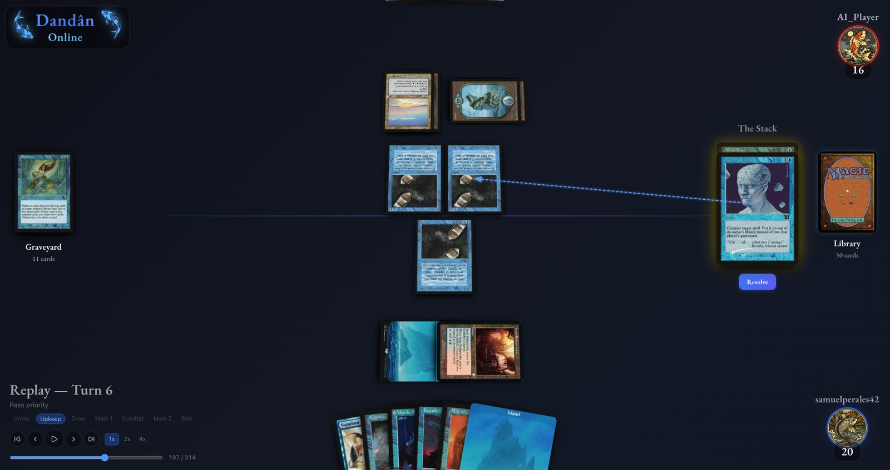

Dandân Online
A friend of mine told me about a Magic the Gathering format called Forgetful Fish. Like commander (which is what I usually play), it was a format created by the community. Nick Floyd created the format in the winter 1996 centered around the card "DanDan". The main premise is that players share a library and graveyard. Without the problems of imbalanced power levels and meta-level counterpicks, this shared-deck feature combined with a bunch of blue deck-manipulation spells makes for some great battle-of-wits type gameplay. The format was officially shared more broadly in an official google doc but has yet to reach as wide of a sub-community within MTG as I think it deserves.
So on my winter break in 2025, I decided to make an online version with a fully fleshed out game engine to support it. There are other third-party online TCG clients for games like Riftbound (riftatlas) but they usually require players to know and respect the rules as there is not programmatic enforcement of all of the rules. To make this more of a chess.com style matchmaking site and to support the ability to create AI opponents for people looking to play solo, I decided to build the actual rules engine for this too.
There are a few open-source MTG rules engines out there like Forge and XMage but they were difficult to modify for this shared-deck structure and lacked implementations for some of the more abnormal (color-modifying) cards that the format made use of. AI coding agents had recently become actually useful, so with XMage as a reference, Cursor, and Sonnet 4.5, I created a custom rules engine with the small subset of content I needed to support Forgetful Fish.
There's certainly a few bugs left to deal with and I would like to revisit this project to polish it up and make a better AI, but I was able to get a fairly desirable result up-and-deployed before the end of break! Please take a look if the format sounds fun to try and send me a message if you'd like to play sometime!

